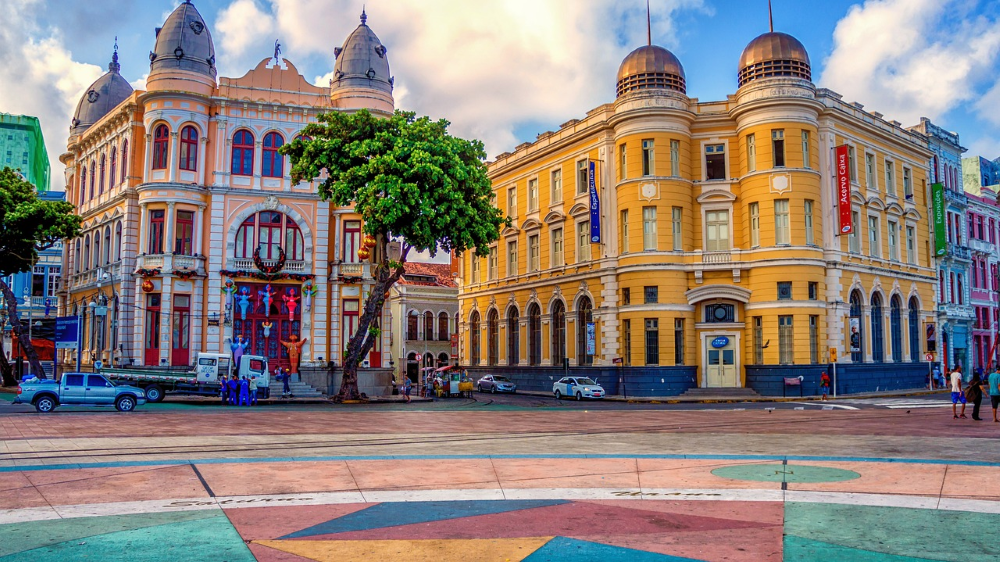

Bem-vindo a Recife
Sobre a Cidade:
Recife, a capital do estado de Pernambuco, no nordeste do Brasil, distingue-se pelos seus vários rios, pontes, ilhéus e penínsulas. Recife Antigo, na própria ilha junto ao porto, é o centro histórico da cidade antiga que data do século XVI. A sul, a popular Praia de Boa Viagem é protegida por recifes e está ladeada de blocos de apartamentos elevados, hotéis modernos e restaurantes.
- Fundação: 12 de março de 1537 (486 anos)
- Altitude: 4.000m
- Clima: Tropical Úmido (AM)
- População: 6.816,3 hab./km²
Marco Zero de Recife
A Praça Rio Branco, também conhecida como Marco Zero, é um espaço público localizado no bairro do Recife da cidade de mesmo nome, capital de Pernambuco. O local fica próximo ao Porto do Recife e abriga o Marco Zero da cidade, ou seja, o local de fundação de Recife. É deste marco que são feitas todas as medidas oficiais de distâncias rodoviárias locais.